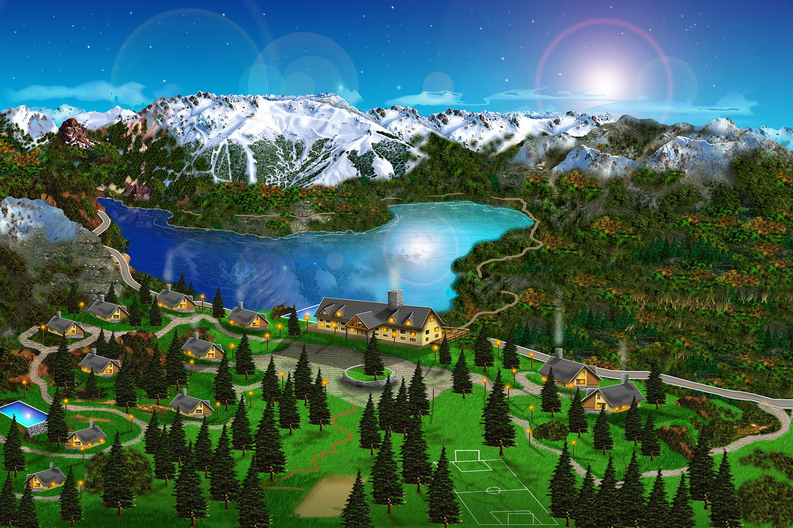

Ubicado en la zona del Lago Gutierrez, Estancia del Carmen es un complejo de montaña que se destaca por su tranquilidad, sus grandes espacios e inmejorables vistas de entorno. A 2300 mts de distancia del Lago Gutiérrez sobre la Ruta Nacional 40, (tramo que une Bariloche con El Bolsón) y a tan solo 10km del centro de San Carlos de Bariloche. El complejo cuenta con una Hostería y cabañas de montaña en tres diferentes medidas. Emplazado sobre 7 hectáreas en la base del Cerro Ventana donde el bosque, la montaña y la imagen del Lago Gutiérrez logran el equilibrio perfecto para disfrutar de la naturaleza y el descanso.
